7 Fitting to all groups
# import prepped data
load(file = "./core_data/transactions_prepd.Rdata")
load(file ="./core_data/transactions_clean.Rdata")
transactions_prepd <- transactions_prepd %>%
select(-sdtrans)#final variable list
industry_location <- transactions_prepd %>%
select(ndate, location, industry, mean_amount, Jan, Mar, May, Jul, Oct, Nov, Dec, allords_volume)# industry_location is the aggregated data frame
output = data.frame()
decpred <- data.frame(ndate = as.numeric(as.Date("2016-12-01")), mean_amount = NA, Jan = 0, Mar = 0, May = 0, Jul = 0, Oct = 0, Nov = 0, Dec = 1, allords_volume = 16.35e9)
december_predict_all <- data.frame()
industries = unique(as.numeric(industry_location$industry))
locations = unique(as.numeric(industry_location$location))
for (ind in industries) {
for (loc in locations) {
# create a subset of the data
temp = industry_location[industry_location$industry == ind &
industry_location$location == loc, ]
# Check to make sure you have at least X months of data
if (nrow(temp) >= 36) {
# train your model
# INSERT YOUR MODEL TRAINING CODE, INCLUDING TRAINING/TEST PARTITIONING
trainrows <- ceiling(0.75*nrow(temp))
train_temp <- temp[1:trainrows,]
test_temp <- temp[(trainrows+1):nrow(temp),]
model <- lm(mean_amount ~., data = select(train_temp, -industry, -location))
# output a prediction
train_temp$prediction = predict(model, train_temp)
test_temp$prediction = predict(model, test_temp)
temp$prediction = predict(model, temp)
# CALCULATE YOUR ERROR
train_error <- rmse(train_temp$mean_amount, train_temp$prediction)
test_error <- rmse(test_temp$mean_amount, test_temp$prediction)
total_error <- rmse(temp$mean_amount, temp$prediction)
# append your error to the output data frame, include industry and location variables
row <- cbind(ind,loc,train_error,test_error, total_error)
output = rbind(output, row)
#predict decemeber
dpred <- data.frame(industry = ind, location = loc, prediction = predict(model, decpred), acc_plu_minus = test_error)
december_predict_all <- rbind(december_predict_all, dpred)
}
}
}
output## ind loc train_error test_error total_error
## 1 1 1 3895.290 8672.532 5406.023
## 2 1 2 7517.271 10268.024 8243.750
## 3 1 3 5294.130 15360.581 8757.274
## 4 1 4 7699.804 8483.127 7890.109
## 5 1 5 5576.327 15919.373 9117.584
## 6 1 6 5853.082 9696.393 6945.883
## 7 1 7 14949.199 17754.280 15650.836
## 8 1 8 4650.881 15813.074 8665.524
## 9 1 9 8073.405 14045.066 9802.711
## 10 1 10 8503.050 14888.191 10356.525
## 11 2 1 21241.467 20906.393 21163.521
## 12 2 2 16998.259 22143.519 18332.368
## 13 2 3 39598.871 106479.033 62085.420
## 14 2 4 36074.533 36848.062 36257.051
## 15 2 5 38654.379 129285.617 71108.589
## 16 2 6 21412.246 81695.846 43740.472
## 17 2 7 19180.581 64594.705 35472.928
## 18 2 8 43836.984 125068.506 71643.913
## 19 2 9 50607.327 36573.985 47694.479
## 20 2 10 21698.464 89477.378 47269.677
## 21 3 1 77693.401 173253.737 107929.346
## 22 3 2 42081.707 68963.351 49694.107
## 23 3 3 82700.509 303411.435 163659.023
## 24 3 4 64994.910 71311.605 66527.066
## 25 3 5 132606.388 179201.536 144861.301
## 26 3 7 49881.767 50451.723 50015.743
## 27 3 8 33914.699 34886.172 34160.158
## 28 3 9 148122.385 794161.575 405480.208
## 29 4 1 21388.094 71688.032 39410.317
## 30 4 2 6981.621 12508.189 8599.545
## 31 4 3 14494.126 27516.177 18387.906
## 32 4 4 21603.664 28716.983 23462.589
## 33 4 5 25464.219 46839.963 31782.893
## 34 4 6 138553.013 300892.292 189455.414
## 35 4 7 18415.599 29821.522 21631.040
## 36 4 8 12591.545 14662.995 13105.732
## 37 4 9 11075.150 14283.310 11903.749
## 38 4 10 21012.606 39372.696 26476.552
## 39 5 1 59161.965 91496.155 68119.417
## 40 5 2 29451.600 30488.851 29697.609
## 41 5 3 49704.337 42248.602 48073.742
## 42 5 4 42128.382 122087.010 69626.731
## 43 5 5 15167.065 156243.737 77541.651
## 44 5 6 61724.744 162117.231 95233.191
## 45 5 7 29825.216 36721.676 31574.587
## 46 5 8 38860.540 38781.761 38842.117
## 47 5 9 45845.884 94178.541 60710.684
## 48 5 10 76662.653 164356.921 104037.945
## 49 6 1 3398587.535 11313638.885 6229300.998
## 50 7 1 18657.862 71535.014 38266.148
## 51 7 2 19108.429 25538.778 20792.427
## 52 7 3 84381.100 32052.712 75459.904
## 53 7 4 45182.621 67755.795 51362.752
## 54 7 5 43623.216 56127.253 46849.786
## 55 7 6 34767.971 35224.528 34875.361
## 56 7 7 13064.627 33449.670 19814.204
## 57 7 8 34562.677 39695.372 35829.911
## 58 7 9 87045.702 218993.216 130490.781
## 59 7 10 49110.600 111821.184 69092.966
## 60 8 1 232578.881 619268.640 362197.073
## 61 8 2 49774.260 109477.258 68576.272
## 62 8 3 107934.532 78985.444 101899.071
## 63 8 4 33285.550 88185.518 51659.471
## 64 8 5 176349.354 116664.553 164335.167
## 65 8 6 114534.722 231100.285 150158.501
## 66 8 7 165097.213 264819.477 193108.840
## 67 8 8 39560.720 94849.498 57483.119
## 68 8 9 26480.756 70389.712 41191.334
## 69 8 10 99057.465 103150.476 100030.416
## 70 9 1 85861.232 138191.539 100579.529
## 71 9 2 59698.637 182168.189 102452.804
## 72 9 3 87967.438 157814.887 108425.741
## 73 9 4 476128.292 730155.100 546274.122
## 74 9 7 92129.789 547239.918 276749.796
## 75 9 9 68267.270 111490.127 80626.269
## 76 10 2 25553.898 31339.474 27019.241
## 77 10 5 6233.101 25480.393 13480.017
## 78 10 7 102983.701 104309.568 103295.536
## 79 10 8 757593.976 970693.994 812493.7437.1 Performance
# evaluating model performance by out-of-set prediction RMSE
te_mean <- mean(grouped_errors$test_error)
te_sd <- sd(grouped_errors$test_error)
te_mean## [1] 263623.3## [1] 1271581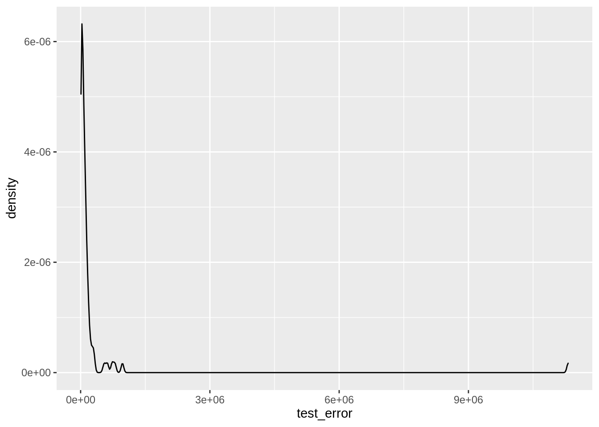
#adding an index key
grouped_errors$key <- paste("ind",grouped_errors$ind,"loc",grouped_errors$loc, sep = "")
ggplot(grouped_errors, aes(x = key, y = test_error)) + geom_point()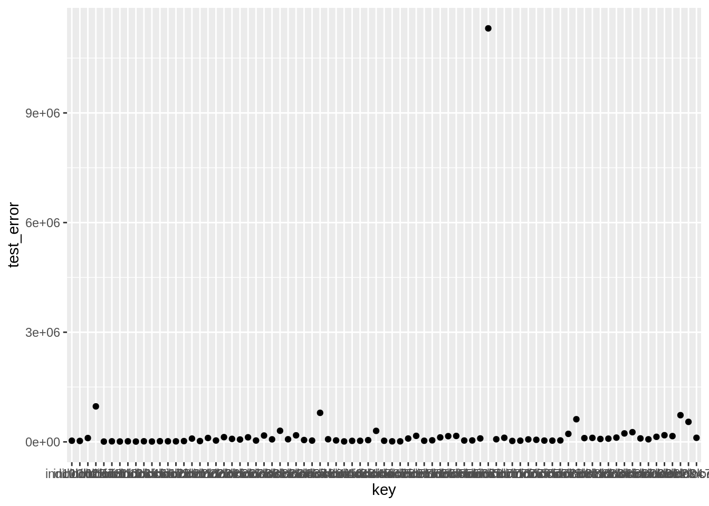
#though the labels are not very clear one group has an obviously much poorer performance than all others
worst_perf <- grouped_errors[which.max(grouped_errors$test_error),]
worst_perf_rem <- grouped_errors[-(which.max(grouped_errors$test_error)),]
# unsuprisngly it is industry 6 location 1
wpr_mean <- mean(worst_perf_rem$test_error)
wpr_sd <- sd(worst_perf_rem$test_error)
wpr_mean## [1] 121956.5## [1] 178426.8#the mean and distribution are much better with the outlier removed, though as the distribution is quite skewed the SD is not very relevant
# seeing the improved plo
ggplot(worst_perf_rem, aes(x = test_error)) + geom_density()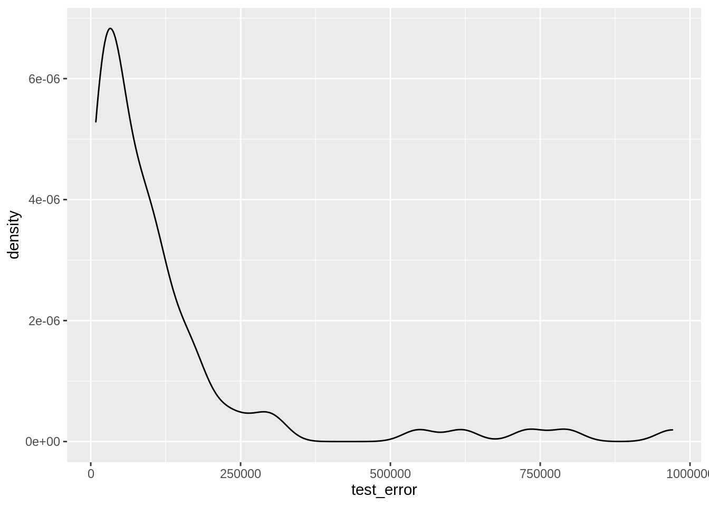
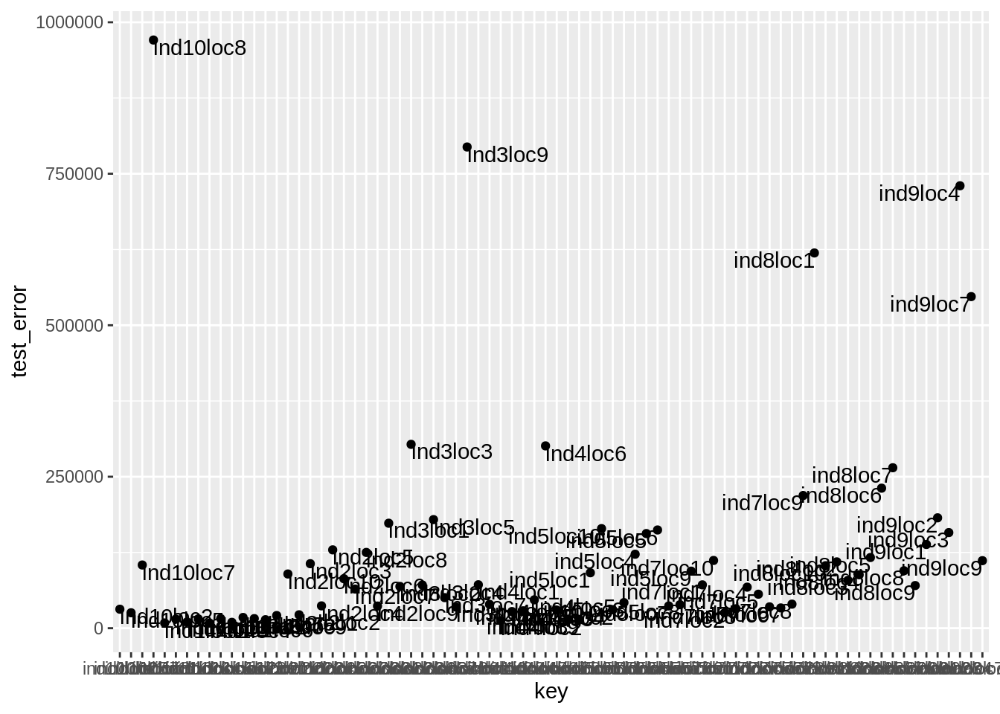
# second worst performer
worst_perf2 <- worst_perf_rem[which.max(worst_perf_rem$test_error),]
worst_perf2## ind loc train_error test_error total_error key
## 79 10 8 757594 970694 812493.7 ind10loc8worst_perf2_rem <- worst_perf_rem[-(which.max(worst_perf_rem$test_error)),]
# industry 10 location 8, both the industries identified in understanding as having some customers with expetionaly high transaction values
# below that
ggplot(worst_perf2_rem, aes(x = key, y = test_error)) + geom_point() + geom_text(aes(label = key), vjust = +1, hjust = "inward")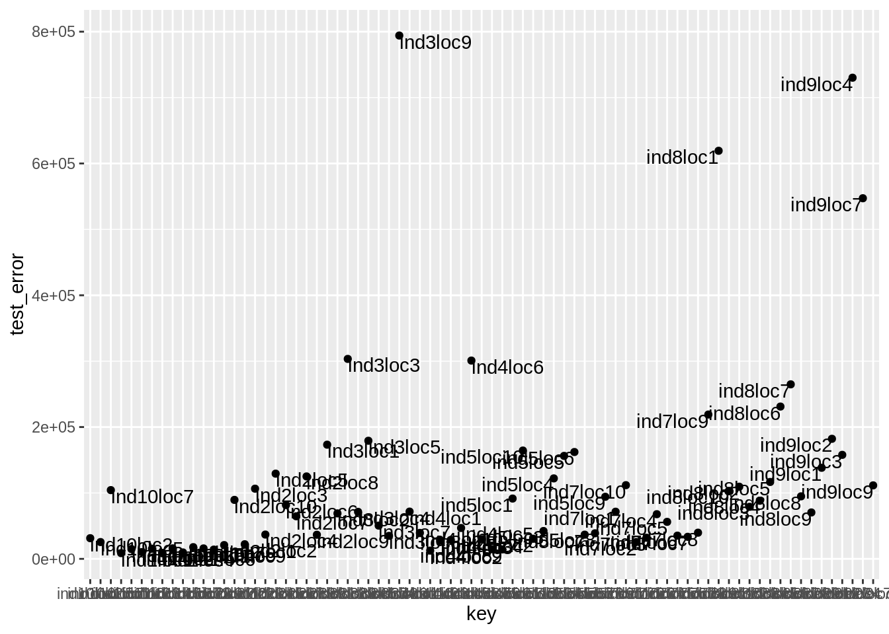
# referring to an earlier plot
ggplot(transactions, aes(x= trdate, y = monthly_amount)) + geom_point() + facet_grid(rows = vars(transactions$industry), cols = vars(transactions$location), scales = "free")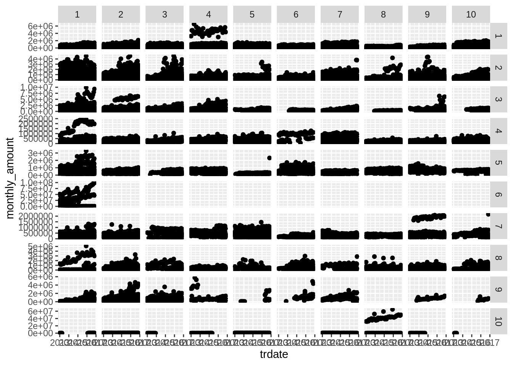
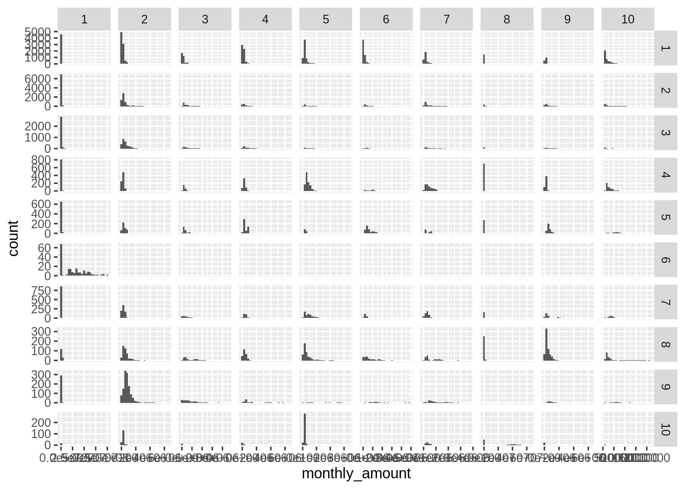
# high test_error appears to corrolate with high variation in transaction amount, or when there are sudden changes to transactions e.g. Industry 3 location 9 & industry 9 location 4
# mean by industry
mb_ind <- grouped_errors %>%
group_by(ind) %>%
summarise(mean_terror = mean(test_error), sdtest = sd(test_error)) %>%
arrange(desc(mean_terror))
mb_ind## # A tibble: 10 x 3
## ind mean_terror sdtest
## <dbl> <dbl> <dbl>
## 1 6 11313639. NA
## 2 9 311177. 261239.
## 3 10 282956. 459892.
## 4 3 209455. 252845.
## 5 8 177689. 168490.
## 6 5 93872. 55077.
## 7 2 71307. 41262.
## 8 7 69219. 58710.
## 9 4 58630. 86981.
## 10 1 13090. 3443.# mean by location
mb_loc <- grouped_errors %>%
group_by(loc) %>%
summarise(mean_terror = mean(test_error), sdtest = sd(test_error)) %>%
arrange(desc(mean_terror))
mb_loc## # A tibble: 10 x 3
## loc mean_terror sdtest
## <dbl> <dbl> <dbl>
## 1 1 1389850. 3726007.
## 2 9 169264. 261162.
## 3 8 166806. 327120.
## 4 4 144193. 239466.
## 5 6 136788. 114864.
## 6 7 127685. 174693.
## 7 3 95484. 96665.
## 8 5 90720. 62400.
## 9 10 87178. 53545.
## 10 2 54766. 57281.# mean by location without industry 6
mb_loc_n6 <- grouped_errors %>%
filter(ind != 6) %>%
group_by(loc) %>%
summarise(mean_terror = mean(test_error), sdtest = sd(test_error)) %>%
arrange(desc(mean_terror))
mb_loc_n6## # A tibble: 10 x 3
## loc mean_terror sdtest
## <dbl> <dbl> <dbl>
## 1 9 169264. 261162.
## 2 8 166806. 327120.
## 3 1 149377. 197571.
## 4 4 144193. 239466.
## 5 6 136788. 114864.
## 6 7 127685. 174693.
## 7 3 95484. 96665.
## 8 5 90720. 62400.
## 9 10 87178. 53545.
## 10 2 54766. 57281.7.2 improvements
7.3 Industry 6 Location 1 (round 2)
load(file = "./core_data/transactions_prepd.Rdata")
industry_location_i6l1 <- transactions_prepd %>%
select(ndate, location, industry, mean_amount, Jan, Mar, May, Jul, Oct, Nov, Dec, allords_volume, sdtrans, ntrans)
output_i6l1 = data.frame()
decpred_i6l1 <- data.frame(ndate = as.numeric(as.Date("2016-12-01")), mean_amount = NA, Jan = 0, Mar = 0, May = 0, Jul = 0, Oct = 0, Nov = 0, Dec = 1, allords_volume = 16.35e9)
december_predict_i6l1 <- data.frame()
i6l1 = industry_location_i6l1[industry_location_i6l1$industry == 6 &
industry_location_i6l1$location == 1, ]
trainrows <- ceiling(0.75*nrow(i6l1 ))
train_i6l1 <- i6l1 [1:trainrows,]
test_i6l1 <- i6l1 [(trainrows+1):nrow(i6l1 ),]
model_i6l1 <- lm(mean_amount ~., data = select(train_i6l1, -industry, -location))
# output a prediction
train_i6l1$prediction = predict(model_i6l1, train_i6l1)
test_i6l1$prediction = predict(model_i6l1, test_i6l1)
i6l1 $prediction = predict(model_i6l1, i6l1 )
# CALCULATE YOUR ERROR
train_error <- rmse(train_i6l1$mean_amount, train_i6l1$prediction)
test_error <- rmse(test_i6l1$mean_amount, test_i6l1$prediction)
total_error <- rmse(i6l1 $mean_amount, i6l1 $prediction)
# append your error to the output data frame, include industry and location variables
ind = 6
loc = 1
row <- cbind(ind,loc,train_error,test_error, total_error)
output_i6l1 = rbind(output_i6l1, row)
#
i6l1_orig <- worst_perf
i6l1_orig$iteration <- "before"
output_i6l1$key <- "ind6loc1"
output_i6l1$iteration <- "after"
i6l6_compare <- rbind(i6l1_orig, output_i6l1)
i6l6_compare## ind loc train_error test_error total_error key iteration
## 49 6 1 3398588 11313639 6229301 ind6loc1 before
## 1 6 1 2116380 7038670 3876327 ind6loc1 after## [1] 0.3778597##
## Call:
## lm(formula = mean_amount ~ ., data = select(train_i6l1, -industry,
## -location))
##
## Residuals:
## Min 1Q Median 3Q Max
## -5061245 -869298 450883 1289373 4031288
##
## Coefficients:
## Estimate Std. Error t value Pr(>|t|)
## (Intercept) 1.237e+08 5.535e+07 2.234 0.035069 *
## ndate -6.506e+03 3.246e+03 -2.004 0.056459 .
## Jan -6.552e+05 2.047e+06 -0.320 0.751699
## Mar -1.895e+06 1.766e+06 -1.073 0.293824
## May -4.283e+05 1.685e+06 -0.254 0.801482
## Jul 2.077e+06 1.682e+06 1.235 0.228904
## Oct 7.676e+05 1.897e+06 0.405 0.689286
## Nov -4.398e+05 1.833e+06 -0.240 0.812368
## Dec 9.706e+05 2.445e+06 0.397 0.694885
## allords_volume 5.059e-04 3.019e-04 1.676 0.106784
## sdtrans 6.123e-01 1.704e-01 3.593 0.001463 **
## ntrans -3.871e+06 8.636e+05 -4.482 0.000155 ***
## ---
## Signif. codes: 0 '***' 0.001 '**' 0.01 '*' 0.05 '.' 0.1 ' ' 1
##
## Residual standard error: 2592000 on 24 degrees of freedom
## Multiple R-squared: 0.8526, Adjusted R-squared: 0.785
## F-statistic: 12.62 on 11 and 24 DF, p-value: 1.869e-07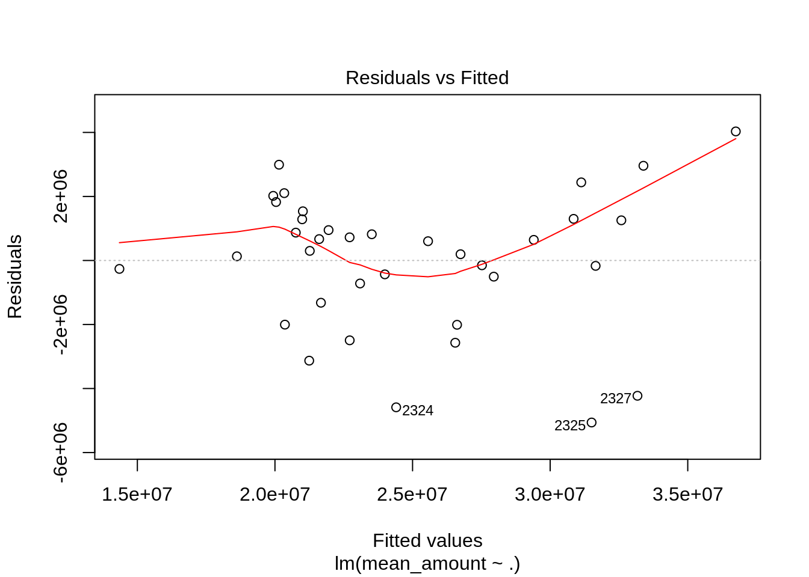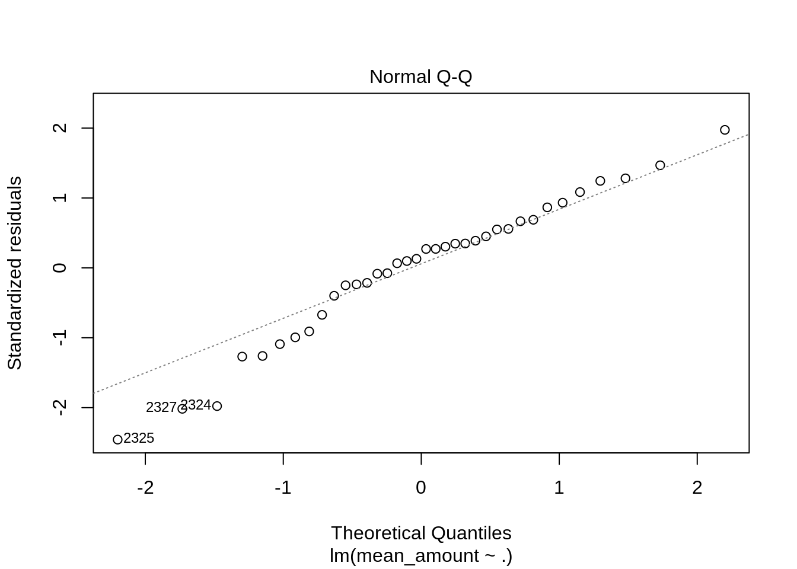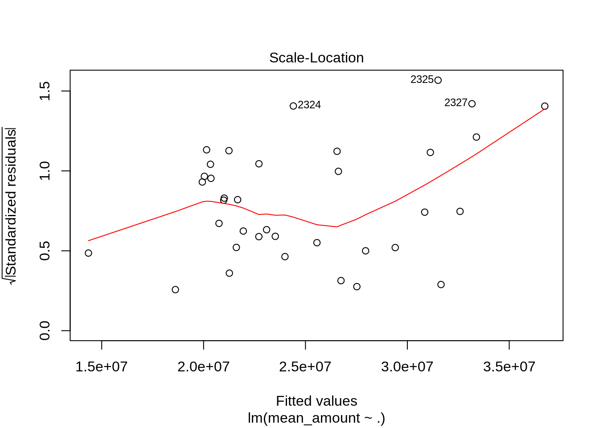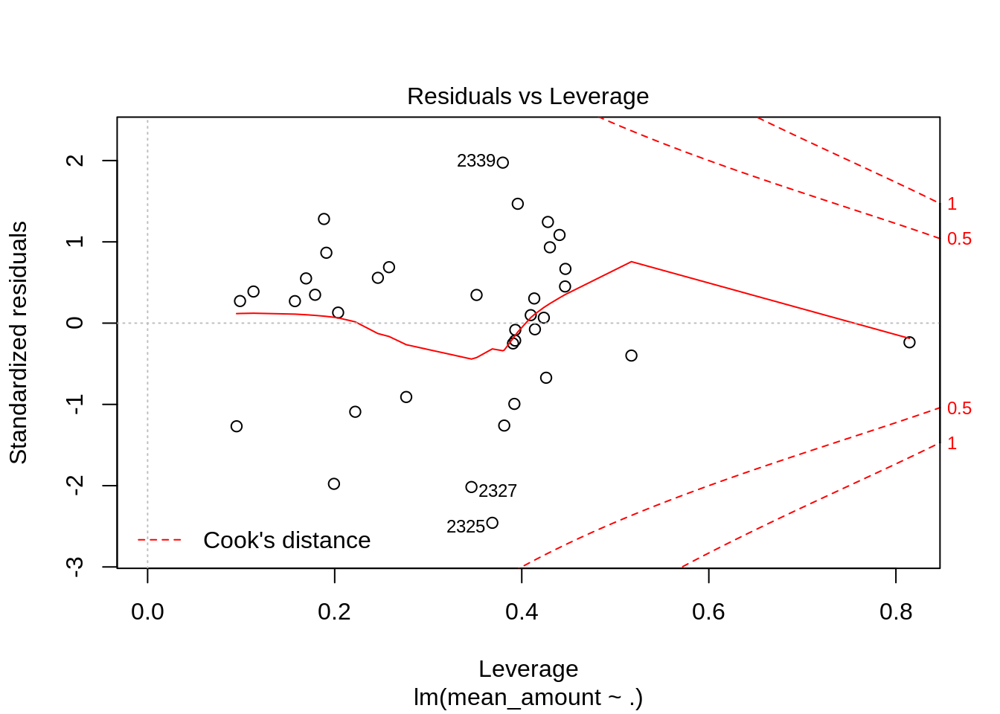
#the model still shows some residual issues
# sd and ntrans would also need to be predicted producing some challenges with this method
# dpred <- data.frame(industry = ind, location = loc, prediction = predict(model_i6l1, decpred_i6l1), acc_plu_minus = test_error)
# december_predict_i6l1 <- rbind(december_predict_i6l1, dpred)# or by removing the outlier customer
load(file ="./core_data/transactions_clean.Rdata")
load(file = "./integrate_data/fin_mets.Rdata")
# this requires rebuilding the aggregated dataset
transactions_agg_i6l1 <- transactions %>%
filter(customer_id != "6c530aae768250b8d9c3c908a13ee287") %>%
group_by(industry, location, trdate) %>%
summarise(mean_amount = mean(monthly_amount) , ntrans = n(), sdtrans = sd(monthly_amount)) %>%
select(trdate, everything())
transactions_agg_i6l1$trmonth <- lubridate::month(transactions_agg_i6l1$trdate, label = TRUE, abbr = TRUE)
tmonths <- unique(transactions_agg_i6l1$trmonth)
for (mnth in tmonths) {
transactions_agg_i6l1[transactions_agg_i6l1$trmonth == mnth, mnth] <- 1
transactions_agg_i6l1[transactions_agg_i6l1$trmonth != mnth, mnth] <- 0
}
transactions_prepd_i6l1 <- merge(transactions_agg_i6l1, combined_external, by = "trdate") %>%
arrange(industry, location, trdate)
# not using the additonal variables for a better comparison with the original
industry_location_i6l1_cr <- transactions_prepd_i6l1 %>%
select(ndate, location, industry, mean_amount, Jan, Mar, May, Jul, Oct, Nov, Dec, allords_volume)
output_i6l1 = data.frame()
decpred_i6l1 <- data.frame(ndate = as.numeric(as.Date("2016-12-01")), mean_amount = NA, Jan = 0, Mar = 0, May = 0, Jul = 0, Oct = 0, Nov = 0, Dec = 1, allords_volume = 16.35e9)
december_predict_i6l1 <- data.frame()
i6l1 = industry_location_i6l1_cr[industry_location_i6l1_cr$industry == 6 &
industry_location_i6l1_cr$location == 1, ]
trainrows <- ceiling(0.75*nrow(i6l1 ))
train_i6l1 <- i6l1 [1:trainrows,]
test_i6l1 <- i6l1 [(trainrows+1):nrow(i6l1 ),]
model_i6l1 <- lm(mean_amount ~., data = select(train_i6l1, -industry, -location))
# output a prediction
train_i6l1$prediction = predict(model_i6l1, train_i6l1)
test_i6l1$prediction = predict(model_i6l1, test_i6l1)
i6l1 $prediction = predict(model_i6l1, i6l1 )
# CALCULATE YOUR ERROR
train_error <- rmse(train_i6l1$mean_amount, train_i6l1$prediction)
test_error <- rmse(test_i6l1$mean_amount, test_i6l1$prediction)
total_error <- rmse(i6l1 $mean_amount, i6l1 $prediction)
# append your error to the output data frame, include industry and location variables
ind = 6
loc = 1
row <- cbind(ind,loc,train_error,test_error, total_error)
output_i6l1 = rbind(output_i6l1, row)
#
i6l1_orig <- worst_perf
i6l1_orig$iteration <- "before"
output_i6l1$key <- "ind6loc1"
output_i6l1$iteration <- "after"
i6l6_compare <- rbind(i6l1_orig, output_i6l1)
i6l6_compare## ind loc train_error test_error total_error key iteration
## 49 6 1 3398588 11313639 6229301 ind6loc1 before
## 1 6 1 5860612 15937391 9260404 ind6loc1 after## [1] -0.4086884##
## Call:
## lm(formula = mean_amount ~ ., data = select(train_i6l1, -industry,
## -location))
##
## Residuals:
## Min 1Q Median 3Q Max
## -19006125 -4137665 -239879 4980895 8451102
##
## Coefficients:
## Estimate Std. Error t value Pr(>|t|)
## (Intercept) -3.801e+08 6.905e+07 -5.505 8.90e-06 ***
## ndate 2.372e+04 3.940e+03 6.021 2.33e-06 ***
## Jan 6.903e+06 4.943e+06 1.397 0.1744
## Mar 5.854e+05 4.554e+06 0.129 0.8987
## May 1.527e+06 4.379e+06 0.349 0.7302
## Jul 6.069e+06 4.384e+06 1.384 0.1780
## Oct 5.724e+06 4.388e+06 1.304 0.2035
## Nov 2.951e+06 4.526e+06 0.652 0.5202
## Dec 1.140e+07 4.506e+06 2.531 0.0178 *
## allords_volume 1.417e-03 7.917e-04 1.790 0.0851 .
## ---
## Signif. codes: 0 '***' 0.001 '**' 0.01 '*' 0.05 '.' 0.1 ' ' 1
##
## Residual standard error: 6896000 on 26 degrees of freedom
## Multiple R-squared: 0.66, Adjusted R-squared: 0.5424
## F-statistic: 5.609 on 9 and 26 DF, p-value: 0.0002552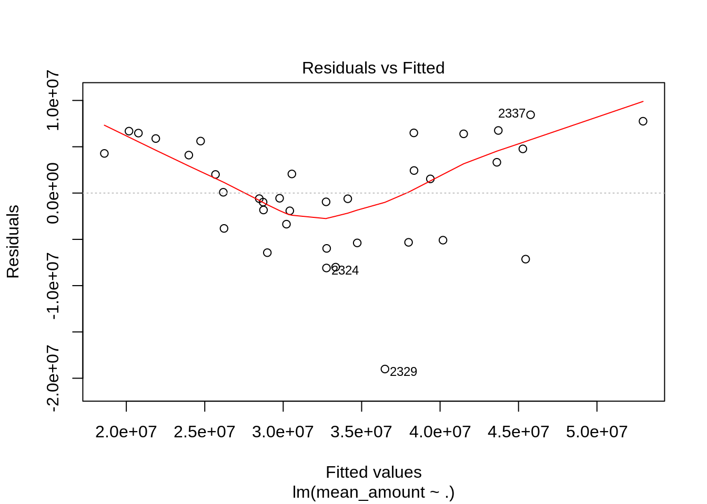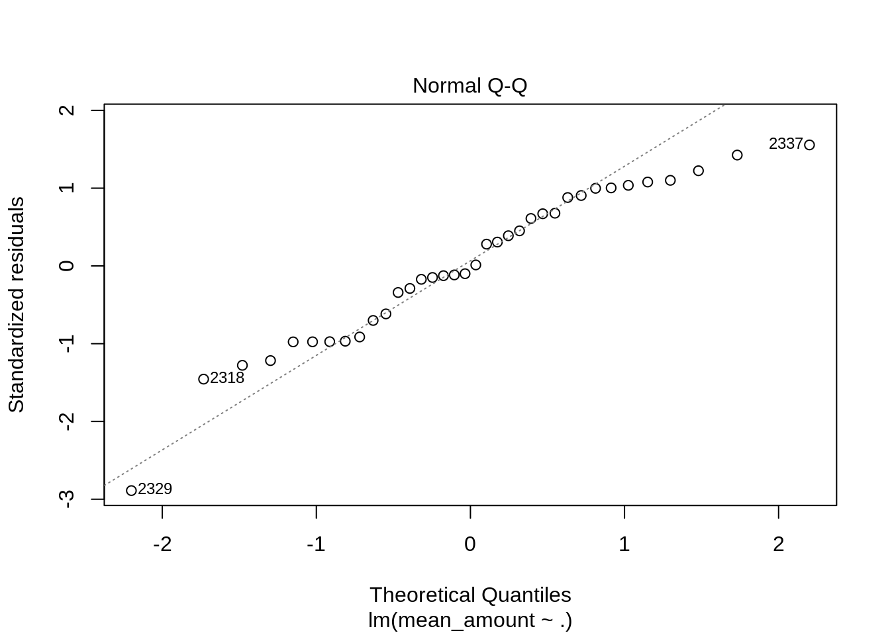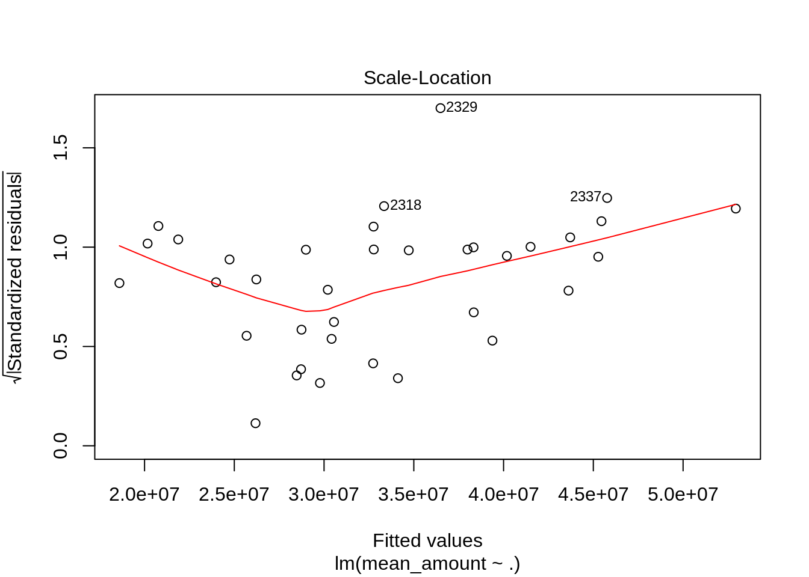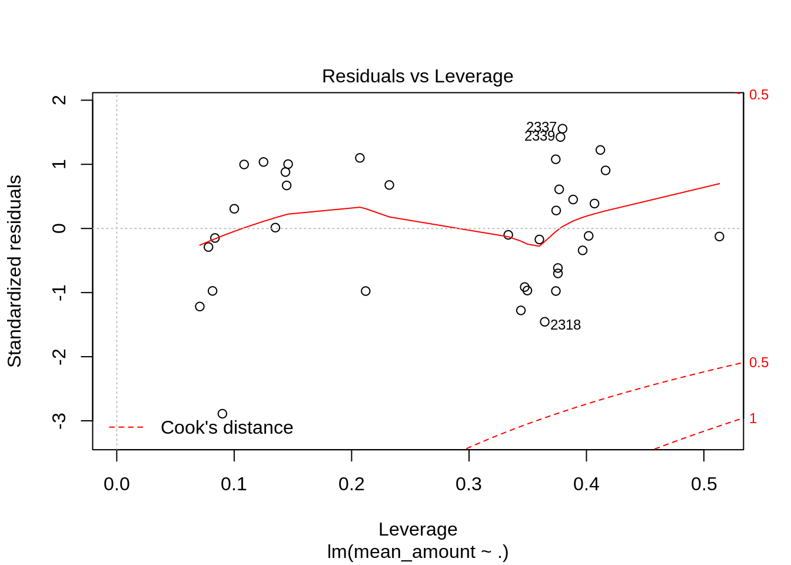
7.4 Industry 3 location 9
output_i3l9 = data.frame()
decpred_i3l9 <- data.frame(ndate = as.numeric(as.Date("2016-12-01")), mean_amount = NA, Jan = 0, Mar = 0, May = 0, Jul = 0, Oct = 0, Nov = 0, Dec = 1, allords_volume = 16.35e9)
december_predict_i3l9 <- data.frame()
#i6l1 aggregated data can be used
i3l9 = industry_location_i6l1[industry_location_i6l1$industry == 3 &
industry_location_i6l1$location == 9, ]
#i3l9 had a slow start, only single transactions per month during part of the first year these NA's will need to be converted to 0
i3l9[i3l9$ntrans == 1,13] <- 0
trainrows <- ceiling(0.75*nrow(i3l9 ))
train_i3l9 <- i3l9 [1:trainrows,]
test_i3l9 <- i3l9 [(trainrows+1):nrow(i3l9),]
model_i3l9 <- lm(mean_amount ~., data = select(train_i3l9, -industry, -location))
# output a prediction
train_i3l9$prediction = predict(model_i3l9, train_i3l9)
test_i3l9$prediction = predict(model_i3l9, test_i3l9)
i3l9$prediction = predict(model_i3l9, i3l9 )
# CALCULATE YOUR ERROR
train_error <- rmse(train_i3l9$mean_amount, train_i3l9$prediction)
test_error <- rmse(test_i3l9$mean_amount, test_i3l9$prediction)
total_error <- rmse(i3l9 $mean_amount, i3l9$prediction)
# append your error to the output data frame, include industry and location variables
ind = 3
loc = 9
row <- cbind(ind,loc,train_error,test_error, total_error)
output_i3l9 = rbind(output_i3l9, row)
#
i3l9_orig <- worst_perf
i3l9_orig$iteration <- "before"
output_i3l9$key <- "ind3loc9"
output_i3l9$iteration <- "after"
i6l6_compare <- rbind(i3l9_orig, output_i3l9)
i6l6_compare## ind loc train_error test_error total_error key iteration
## 49 6 1 3398587.5 11313639 6229301.0 ind6loc1 before
## 1 3 9 117452.1 1110455 546961.3 ind3loc9 after## [1] 0.9018481##
## Call:
## lm(formula = mean_amount ~ ., data = select(train_i3l9, -industry,
## -location))
##
## Residuals:
## Min 1Q Median 3Q Max
## -290462 -67198 11862 81166 210404
##
## Coefficients:
## Estimate Std. Error t value Pr(>|t|)
## (Intercept) 1.066e+07 5.859e+06 1.820 0.081288 .
## ndate -6.212e+02 3.691e+02 -1.683 0.105376
## Jan 3.442e+05 1.108e+05 3.107 0.004804 **
## Mar 7.244e+04 9.561e+04 0.758 0.456010
## May -2.617e+04 9.330e+04 -0.280 0.781533
## Jul -6.501e+04 9.463e+04 -0.687 0.498674
## Oct 5.377e+04 1.002e+05 0.537 0.596421
## Nov 7.713e+04 9.840e+04 0.784 0.440801
## Dec 4.577e+05 1.140e+05 4.017 0.000505 ***
## allords_volume 2.752e-06 1.699e-05 0.162 0.872699
## sdtrans -4.789e-01 1.635e-01 -2.928 0.007356 **
## ntrans 5.479e+04 4.871e+04 1.125 0.271781
## ---
## Signif. codes: 0 '***' 0.001 '**' 0.01 '*' 0.05 '.' 0.1 ' ' 1
##
## Residual standard error: 143800 on 24 degrees of freedom
## Multiple R-squared: 0.731, Adjusted R-squared: 0.6077
## F-statistic: 5.928 on 11 and 24 DF, p-value: 0.0001366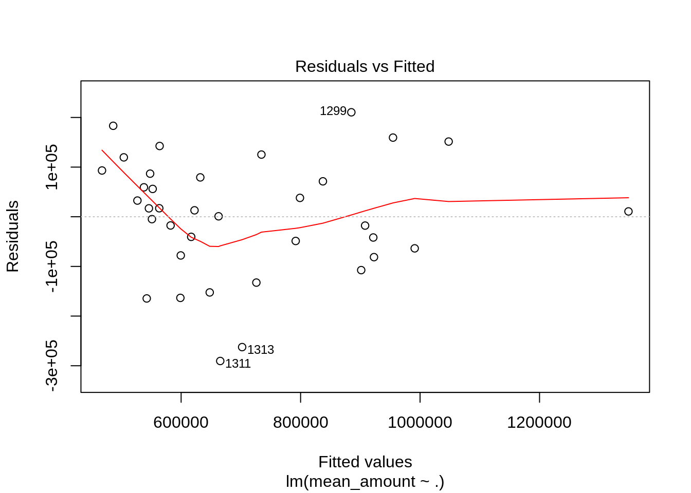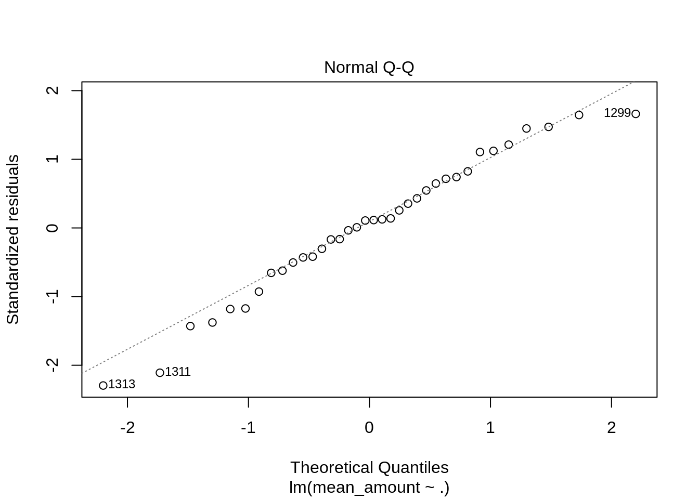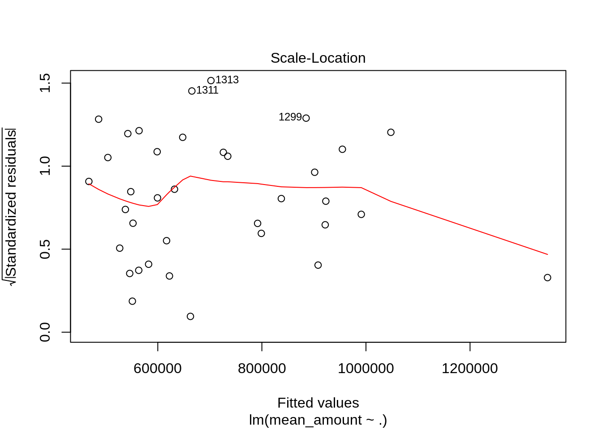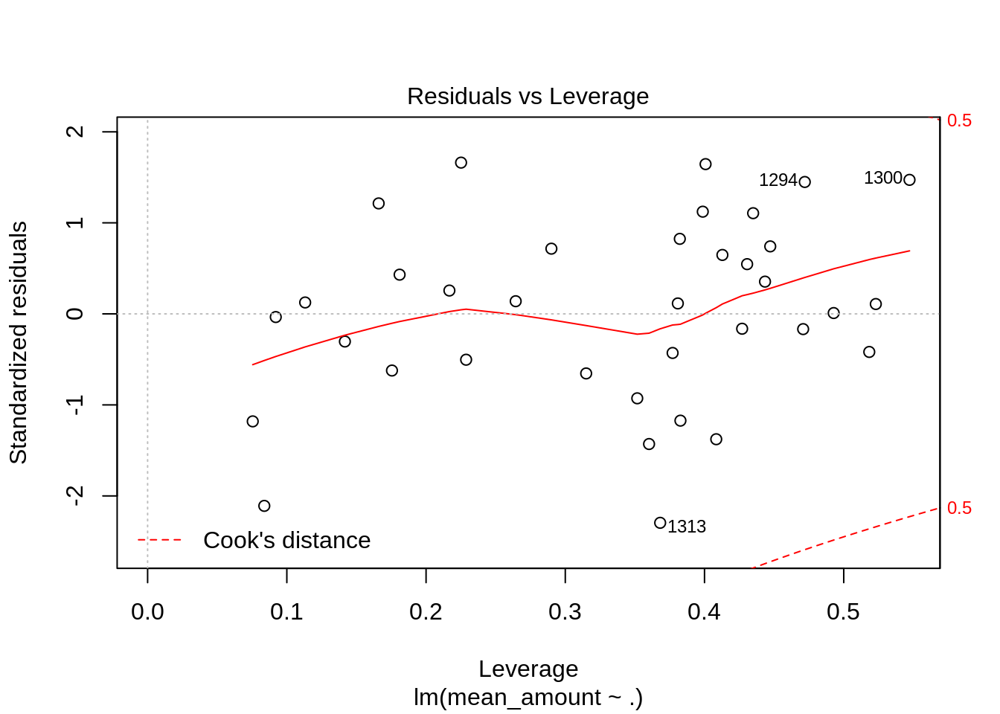
7.5 dply deployment
# beginnings of attempt to use dplyr for deployment on full set
#prepd_train <- transactions_prepd %>%
# ungroup() %>%
#group_by(industry, location) %>%
#group_split()
# pi1l1 <- transactions_prepd %>%
#filter(industry == 1, location == 1) %>%
#select(-industry, -location, -trdate) %>% #removing trdate and switching to ndate for ease of calculation
#arrange(ndate) %>%
#select(ndate, everything())